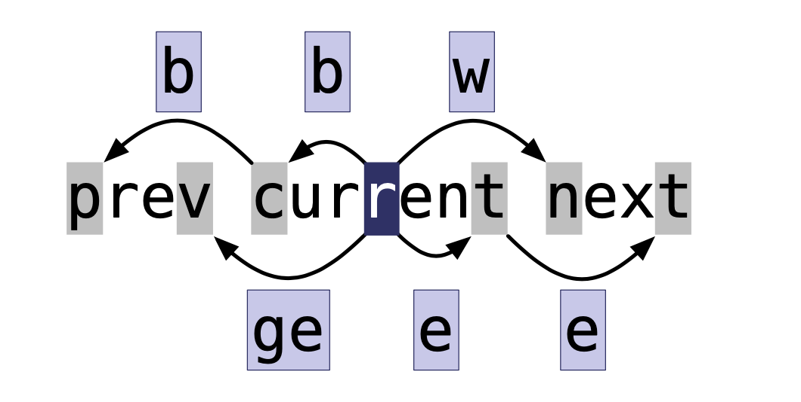

vim
Vim的哲学
Operator + Number + Motion
Think like a Scrabble player: choose less common characters
第一部分
第三章：插入模式
技巧13
| 按键操作 |
用途 |
<C-h> |
删除前一个字符 |
<C-w> |
删除前一个单词 |
<C-u> |
删至行首 |
技巧14
| 按键操作 |
用途 |
<Esc> |
切换到普通模式 |
<C-[> |
切换到普通模式 |
<C-o> |
切换到插入-普通模式 |
- 插入-普通模式：只执行一次普通模式的命令，然后返回到插入模式。(这个键在我的Vim配置中被占用了QAQ)
技巧15 + 50
| 命令 |
用途 |
f{char} |
正向移动到下一个{char}所在处 |
F{char} |
反向移动到上一个{char}所在处 |
t{char} |
正向移动到下一个{char}所在处之前的一个字符上 |
T{char} |
反向移动到上一个{char}所在处之后的一个字符上 |
; |
重复上次的字符查找命令 |
, |
反转方向查找上次的字符查找命令 |
| 命令 |
用途 |
<C-r>{register} |
插入寄存器{register}内的内容 |
<C-r><C-p>{register} |
按照原来的格式插入寄存器{register}内的内容 |
- 上述两种命令组合加上
y这个命令，可以执行复制一些文本，然后插入的操作
技巧 16
<C-r>=6*35<CR>：可以直接计算出6*35，利用的是=寄存器
技巧17 + 18
| 按键操作 |
用途 |
<C-v>{123} |
以十进制字符编码插入字符 |
<C-v>u{1234} |
以十六进制字符编码插入字符 |
<C-v>{nondigit} |
按原义插入非数字字符 |
<C-k>{char1}{char2} |
插入以二合字符{char1}{char2}表示的字符 |
二合字符<C-k>
- 将光标移动到字符上，按下
gc，屏幕下方会显示这个字符的十进制、十六进制、二合表示
:h digraph-table命令可以查看字符的各种表示- 例如
¿，的十六进制表示是{00bf}，二合表示是?I
技巧 19
R：替换模式，是按字符替换，所以制表符会被当成一个字符（会更具expandtab和softtabstop的设置而发生变化）
gR：虚拟替换模式，按显示替换，制表符会当成很多个空格
r & gr：一次性版本
第四章：可视模式
技巧 20 + 21
技巧20的名字竟然叫做 “深入理解可视模式”
Vim的可视模式是选中文本然后进行命令操作- 一般的编辑器是选中文本，下一个操作直接是替换文本为按下的字符
Vim中的这种模式被称为选择模式，在可视模式下按下<C-g>进入
viw：进入选择模式，然后选中光标所在的单词
| 按键操作 |
用途（可视模式再按一遍会回到普通模式） |
v |
面向字符的可视模式 |
V |
面向行的可视模式 |
<C-v> |
面向列块的可视模式 |
o |
切换高亮区的活动端 |
gv |
重新选择上一次由可视模式选择的文本范围 |
e |
好像是前进一个单词 |
技巧 22-26
- 使用
.
- 使用操作符命令大于可视命令
gU{motion}：使{motion}作用的文本大写- 列块可视模式修改，在插入模式下只显示第一行，返回普通模式后显示所有行
<C-v>$将选区扩展至每行的行尾
第五章：命令行模式
技巧 27
:h ex-cmd-index：命令行的命令介绍
| 命令 |
用途 |
:[range]delete[x] |
删除指定范围内的行（到寄存器x） |
:[range]yank[x] |
复制指定范围的行（到寄存器x） |
:[line]put[x] |
在指定行后粘贴寄存器x中的内容 |
:[range]copy{adress} |
把指定范围内的行拷贝到{adress}指定的行下 |
:[range]move{adress} |
把指定范围内的行移动到{adress}指定的行下 |
:[range]join |
连接指定范围内的行 |
:[range]normal {commands} |
对指定范围内的每一行执行普通模式的命令{commands} |
:[range]substitute/{pattern}/{string}/[flags] |
把对指定范围内出现{pattern}的地方替换为{string} |
:[range]global/{pattern}/[cmd] |
把对指定范围内匹配{pattern}的所有行执行Ex命令{cmd} |
技巧 28
| 符号 |
地址 |
1 |
第一行 |
$ |
最后一行 |
0 |
虚拟行，位于第一行上方 |
. |
光标所在行 |
'm |
包含位置标记m所在的行 |
'< |
高亮选区的起始行 |
'> |
高亮选区的结束行 |
% |
整个文件1, $ |
-
地址的表示形式是{start},{end}
-
地址的偏移{adress} + n
n省略默认为1，{adress}可以是行号，位置标记，或者查找模式
技巧 29
| 命令 |
作用 |
:[range] t {adress} |
复制[range]内的内容到{adress}行下 |
:[range] m {adress} |
移动[range]内的内容到{adress}行下 |
t的复杂版本copy或者co-
m的复杂版本move
-
@:重复上次的命令
| 一些常见用法 |
|
:t. |
相当于yyp |
:'<, '>0 |
把高亮选区行复制到文件开头 |
第二部分
技巧 36
一般使用vim正在编辑的文件是文件的缓冲区buffer
| Ex命令 |
效果 |
:ls |
|
:bnext |
|
:bprev |
|
:bfirst |
|
:bnext |
|
:buffer N |
|
:buffer {buffername} |
|
：bdelete |
删除缓冲区，:bdelete B1 B1 , :N, M bdelete |
:bufdo |
对所有缓冲区同时执行Ex命令 |
技巧 37
参数列表： 记录了在vim启动时参数传递给vim的文件列表
{arglist} 可以使用通配符匹配一些文件:args *.*, :args **/*.js:args `cat .chapter` : 可以将cat的输出作为args的输入
| Ex命令 |
效果 |
:next |
|
:prev |
|
:argdo |
对所有的缓冲区同时执行Ex命令 |
技巧 38
可以启用hidden使在buffer之间跳转的时候不用保存
或者使用:next!
技巧 39
第三部分: 更快的移动及跳转
第八章：用命令在文档中移动
技巧47-48
:h motion.txt
Vim有屏幕行和实际行的概念
| 动作的作用 |
屏幕行 |
实际行 |
| left, up, down, right |
h, j, k, l |
gh, gj, gk, gl |
| 行首，行尾，第一个非空白字符 |
0, $, ^ |
g0, g$, g^ |
技巧49

- 上述是基于单词(word)的移动
- 在
Vim中有连个不同的概念word和WORD
| word |
WORD |
b |
B |
w |
W |
e |
E |
ge |
gE |
技巧51-53
Vim的操作哲学是 operator + number +
motion，在本章中的一些技巧都是motion
d{motion}, c{motion}, v{motion}- 还可以使用查找命令
\
| 作用 |
命令 |
| 选择一对分隔符内部的区域 |
i |
| 选择一对分隔符内部的区域以及分隔符 |
a |
| 可选分隔符 |
) |
} |
] |
' |
" |
` |
t:表示xml标签<xml>tag<xml> |
| 文本对象 |
选择范围 |
iw |
当前单词(word) |
iW |
当前字串(WORD) |
is |
当前句子 |
ip |
当前段落 |
aW |
当前字串(WORD)以及一个空格 |
as |
当前句子以及一个空格 |
ap |
当前段落以及一个空行 |
技巧54:位置标记和跳转
1. 设置标记
|
|
m{a-zA-Z} |
设置位置标记 |
`{mark} |
跳转到位置标记所在的行、列 |
'{mark} |
跳转到位置标记所在的行 |
- 小写位置标记只在每个缓冲区局部可见
- 大写位置标记则全局可见
2. 自动位置标记
| 位置标记 |
跳转到 |
`` |
当前文件中上次跳转动作之前的位置 |
`. |
上次修改的地方 |
`^ |
上次插入的地方 |
`[ |
上次修改或复制的起始位置 |
`] |
上次修改或复制的结束位置 |
`< |
上次高亮选区的起始位置 |
`> |
上次高亮选区的结束位置 |
技巧 55
- 常常用此功能修改一对括号的样式，例如将
{London Berlin New York}修改为 [London Berlin New York]
Tips
matchit随vim一起发布，但它缺省并未使能
" 将这一段内容加入vimrc
set nocompatible
filetype plugin on
runtime macros/matchit.vim
- 推荐一个插件surround
第九章：在文件间跳转
技巧56
什么是跳转
:jumps- 任何大范围的移动都被当成跳转(hjkl, 面向字符和单词的移动不算)
|
|
( / ) |
跳到上一句/下一句的开头 |
H/M/L |
跳到屏幕的最上方/中间/最下方 |
gf |
跳转到光标下的文件名 |
<C-]> |
跳转到光标下关键字定义之处 |
vim 把 <Tab>和<C-i>认为是一个东西
技巧57
:changs
技巧58
gf 跳转到文件
" 可以设置一个或多个扩展名字
:set suffixesadd+=.md
技巧59
注意设置全局标记
- m + Upcase_letter
第四部分:寄存器
第十章：复制与粘贴
技巧60-61
"{register}：可以指定寄存器
- 使用
y{motion}命令，要复制的文本同时被拷贝进入无名寄存器""，和复制专用寄存器"0
| 寄存器 |
作用 |
"" |
|
"{a-z} |
|
"0 |
|
"_ |
黑洞寄存器 |
"+ |
X11剪切板，用剪切、复制与粘贴命令操作 |
|
X11主剪切板，用鼠标中键操作(Windows 和 Mac OSX没有) |
"+p：可以粘贴系统剪切板的内容, 插入模式下使用<C-r>+
| 只读寄存器 |
|
"% |
当前文件名 |
"# |
轮换文件名 |
". |
上次插入的文本 |
": |
上次执行的Ex命令 |
"/：(可以通过:let改变) |
上次查找的模式 |
技巧62 - 63
P 粘贴到当前位置之前gp 与p作用相同，光标位置在当前位置的结尾而不是开头gP 与P作用相同，光标位置在当前文本位置的结尾而不是开头
技巧 64
懒得看
第11章:宏
技巧 65 - 68
- 使用
q{register}开始录制宏，使用q结束录制
reg {register}看register中的内容
- Visual多行选中，再
normal @a可以并行执行
技巧 69
- 使用
q{REGISTER}加内容在q{register}之后。
技巧 70
在一组文件中执行宏，但是我懒得看
技巧 71
let i = 0
echo i
let i += 1
let i = 1
qa
I<C-r>=i<CR>)<Esc>
let i += 123
q
技巧72 修改宏